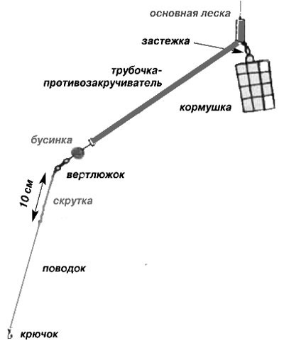
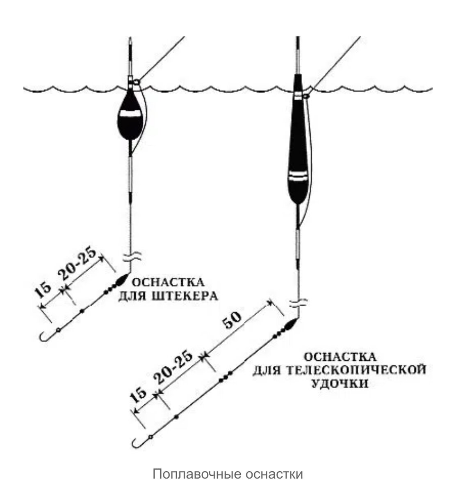
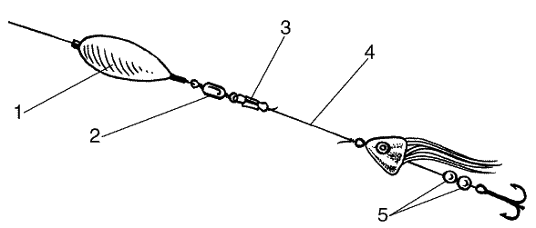
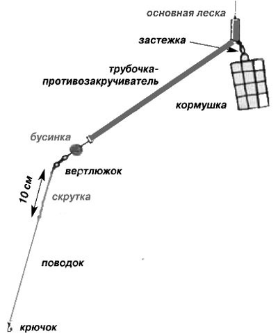
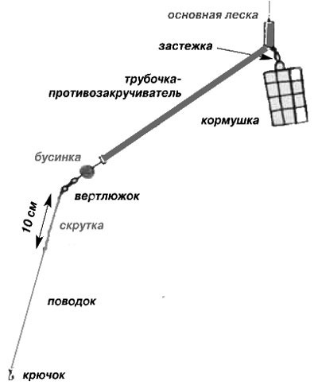
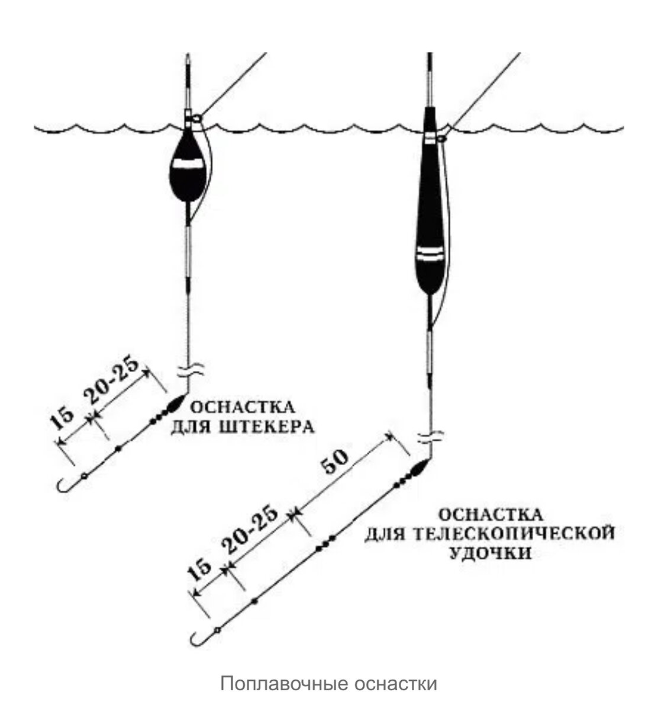
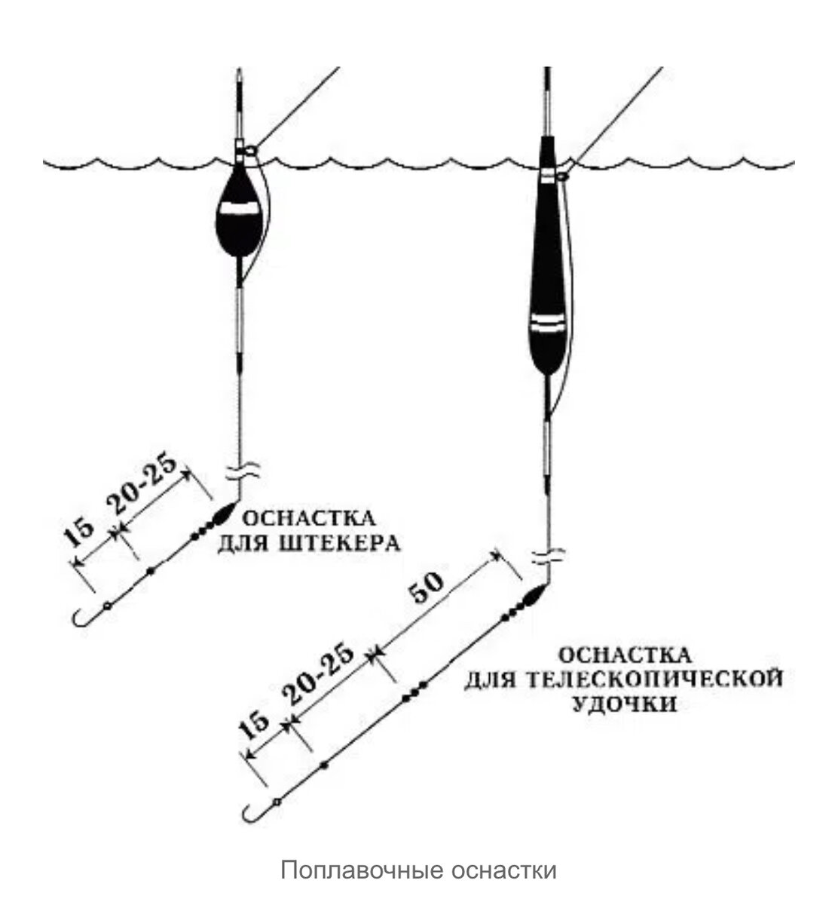
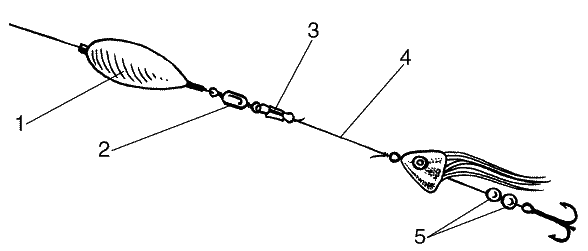
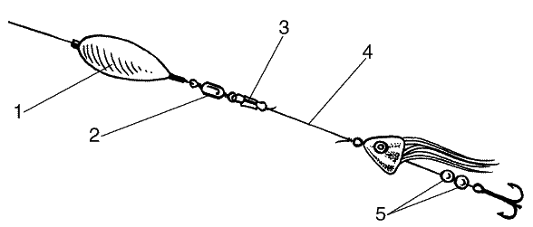

Как работают снасти?
Как ловить на фидер?

Узнать больше
Как ловить на поплавок?

Узнать больше
Как ловить на спиннинг?

Узнать больше
Вернуться
 

 

 
